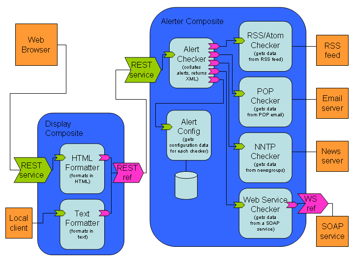

Tuscany SCA Native Samples - Alert Aggregator Sample
This is a more complex sample that shows how Tuscany and SCA can be used to
develop and run mash-up style web applications.
The Alert Aggregator sample aggregates items of information from various data
sources into a series of "alerts" that are displayed in an
automatically updating web page. Alert sources can currently include RSS/Atom
news feeds and POP3/IMAP email
The Alert Aggregator sample requires the following extensions:
Please follow the documentation to ensure you have these extensions built and installed
on your system
Additionally, the Alert Aggregator sample requires the Python FeedParser library, available from
http://feedparser.org. Please download and
install the library by following the documentation.
There are three sub-projects in this workspace:
- sample.alerter
This contains the source code and SCDL artifacts for the SCA components
implementing the Alert Aggregator configuration and alert retrieval.
- sample.display
This contains the source code and SCDL artifacts for the SCA components
implementing the display and storage of the retrieved alerts.
- httpserver
This contains a minimal configuration for the Apache HTTP server used
to host the services as well as scripts to start and stop the server.
Additionally, there is the sample.alerter.app.composite file. This
describes the configuration of the SCA composites deployed to the SCA
runtime.
The following SCA diagram shows the different components and composites and how the
wiring between them is specified. Not all of these components are currently
implemented in this sample.

Building the Alert Aggregator sample on Linux and Mac OS X
If using the binary distribution the samples are built and installed in
<tuscany_sca_install_dir>/samples - go directly to Running the sample on Linux and Mac OS X.
- The following environment variables are required:
- TUSCANY_SCACPP=<path to installed Tuscany SCA>
- TUSCANY_SDOCPP=<path to installed Tuscany SDO>
- As the Alert Aggregator sample is based on Python scripts, a specific compilation step is not necessary -
only deployment is required. Deploy the Python samples only with the following command sequence:
- cd <tuscany_sca_install_dir>/samples
- ./configure --enable-python --enable-cpp=no --prefix=$TUSCANY_SCACPP
- make install
NOTE: If you don't provide the --prefix configure option, it will by default install into
/usr/local/tuscany/sca/samples/AlertAggregator
Running the Alert Aggregator sample on Linux and Mac OS X
- The Alert Aggregator sample requires the following extensions:
Please follow the documentation to ensure you have these extensions built and installed
on your system
- The Alert Aggregator sample requires the Python FeedParser library, available from
http://feedparser.org. Please download and
install the library by following the documentation.
- Start the Apache HTTPD server:
- The following environment variables are required:
- TUSCANY_SCACPP=<path to installed Tuscany SCA>
- TUSCANY_SDOCPP=<path to installed Tuscany SDO>
- PYTHON_LIB=<path to the Python library>
Note: If you are using a default installation of Python 2.5 this is usually /usr/lib
- cd <tuscany_sca_install_dir>/samples/AlertAggregator/deploy/httpserver
- ./startserver.sh
NOTE: Depending on your installation of Apache HTTPD you may need to log in as root before following
these steps. If so, you may also need to uncomment the User and Group directives in the
<tuscany_sca_install_dir>/samples/AlertAggregator/deploy/httpserver/conf/httpd.conf file
and set these to the appropriate username and group that the server should run as
- Run the client from your web browser:
- Point your browser at http://localhost:9090/index.html
NOTE: If plain text is diplayed by your browser, rather than a rendered web page, you may need
to uncomment the LoadModule mime_module directive in the
<tuscany_sca_install_dir>/samples/AlertAggregator/deploy/httpserver/conf/httpd.conf file. Set the correct path to
the mod_mime.so library and restart the server
- You should see the Alert Aggregator web interface that allows you to:
- Read new alerts
- Update alerts from all sources
- Update alerts from a specific source
- Edit the configuration of a data source
- Add a new RSS/Atom or POP email data source
- Remove a specific data source and all associated alerts
Building the Alert Aggregator sample on Windows
If using the binary distribution the samples are built and installed in
<tuscany_sca_install_dir>\samples - go directly to Running the samples on Windows.
- The following environment variables are required:
- TUSCANY_SCACPP=<path to installed Tuscany SCA>
- TUSCANY_SDOCPP=<path to installed Tuscany SDO>
- As this sample is based on Ruby scripts, a specific compilation step is not necessary -
only deployment is required. Deploy the sample with the following commands:
- cd <tuscany_sca_install_dir>\samples\AlertAggregator
- deploy.bat
Running the Alert Aggregator sample on Windows
- The Alert Aggregator sample requires the following extensions:
Please follow the documentation to ensure you have these extensions built and installed
on your system
- The Alert Aggregator sample requires the Python FeedParser library, available from
http://feedparser.org. Please download and
install the library by following the documentation.
- Start the Apache HTTPD server:
- The following environment variables are required:
- TUSCANY_SCACPP=<path to installed Tuscany SCA>
- TUSCANY_SDOCPP=<path to installed Tuscany SDO>
- HTTPD_HOME=<path to installed Apache HTTPD server>
- cd <tuscany_sca_install_dir>\samples\AlertAggregator\deploy\httpserver
- startserver.bat
- Run the client from your web browser:
- Point your browser at http://localhost:9090/index.html
NOTE: If plain text is diplayed by your browser, rather than a rendered web page, you may need
to uncomment the LoadModule mime_module directive in the
<tuscany_sca_install_dir>\samples\AlertAggregator\deploy\httpserver\conf\httpd.conf file. Set the correct path to
the mod_mime.so library (e.g. C:\Apache2.2\modules\mod_mime.so) and restart the server
- You should see the Alert Aggregator web interface that allows you to:
- Read new alerts
- Update alerts from all sources
- Update alerts from a specific source
- Edit the configuration of a data source
- Add a new RSS/Atom or POP email data source
- Remove a specific data source and all associated alerts